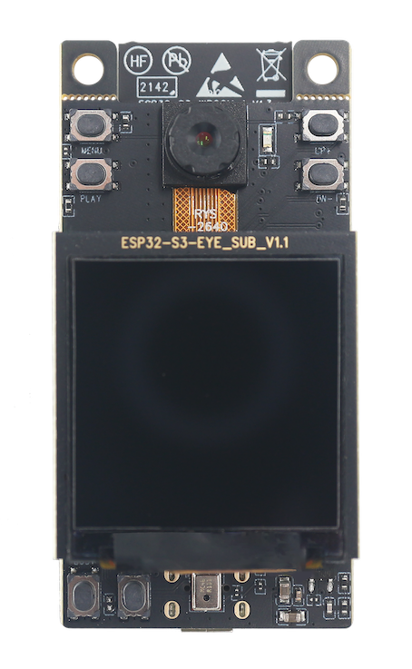
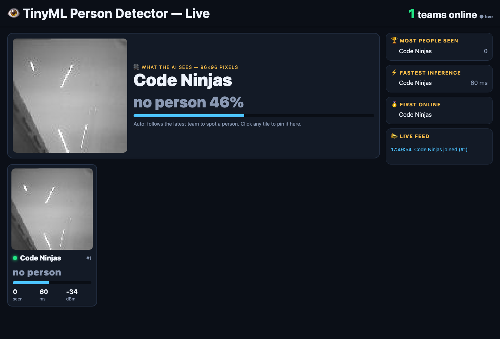
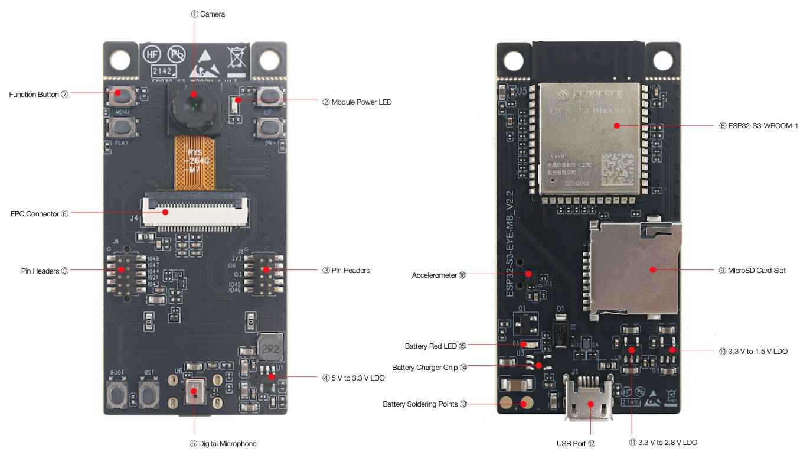
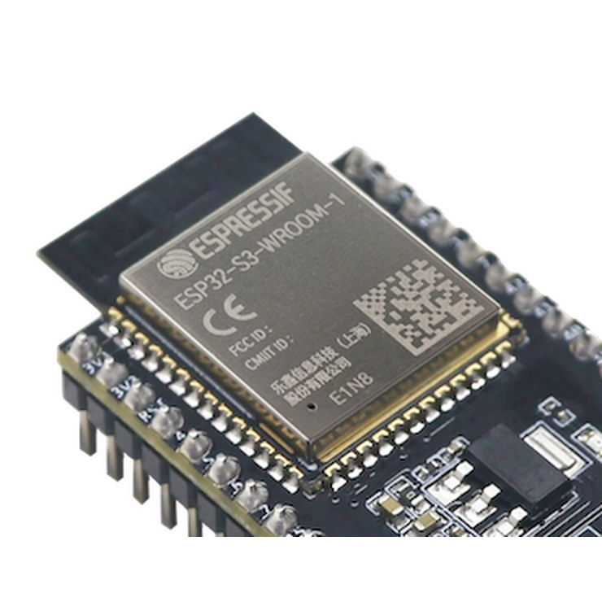
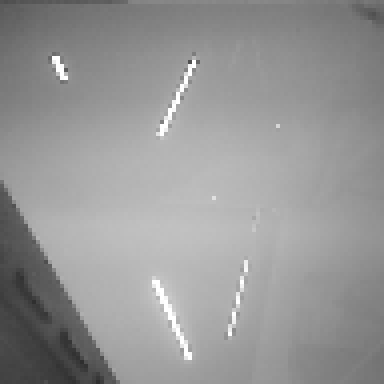
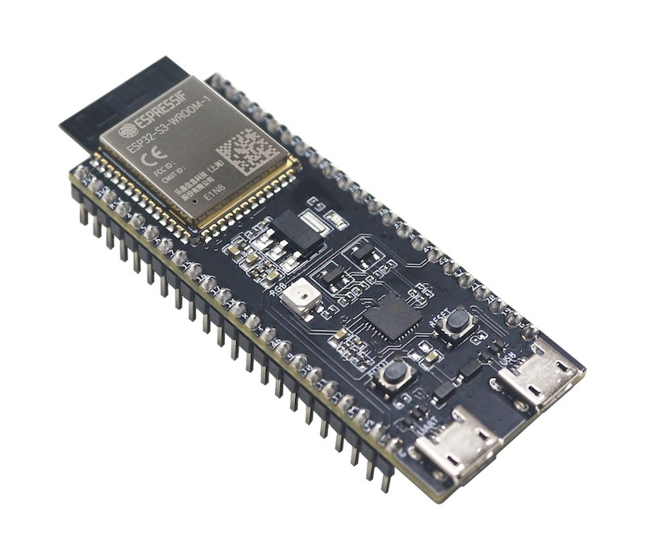

From silicon to smart devices: microcontrollers, on-device AI and the cloud
·



| CPU | 2 cores, 240 MHz |
| Radio | Wi-Fi + Bluetooth LE |
| RAM | 512 KB + PSRAM (8 MB on most) |
| Flash | 4–16 MB |
| Camera | OV2640, 2 MP |
| Extras | microphone, microSD |
Get code onto a chip, without installing anything.
void app_main(void) // your code starts here { printf("Hello World from %s!\n", CHIP); gpio_reset_pin(LED); gpio_set_direction(LED, GPIO_MODE_OUTPUT); while (1) { gpio_set_level(LED, 1); // on vTaskDelay(pdMS_TO_TICKS(500)); gpio_set_level(LED, 0); // off vTaskDelay(pdMS_TO_TICKS(500)); } }
Three questions to keep in mind:
app_main?vTaskDelay and not a loop?We'll answer all three in Part 2.
CPU, ROM, RAM, flash, PSRAM, peripherals, and what happens when you press reset.

| Kept at power-off? | Used for | |
| ROM | ✅ forever, read-only | boot code |
| SRAM | ❌ | variables, stacks |
| PSRAM | ❌ | big buffers, images |
| Flash | ✅ (wears out slowly) | program, AI model, settings |
ESP-ROM:esp32s3-20210327 ① ROM rst:0x15 (USB_UART_CHIP_RESET),boot:0x2a (SPI_FAST_FLASH_BOOT) load:0x3fce2820,len:0x1464 ← copy bootloader into RAM entry 0x403c88e4 I (24) boot: ESP-IDF v6.2 2nd stage bootloader ② Bootloader I (26) boot: 0 nvs WiFi data 01 02 00009000 00006000 I (27) boot: 2 factory factory app 00 00 00010000 00100000 I (27) esp_image: segment 0: vaddr=3c020020 size=0ad00h map ← flash data I (36) esp_image: segment 1: vaddr=3fc90b00 size=03234h load ← DRAM I (42) esp_image: segment 3: vaddr=42000020 size=15304h map ← flash code I (74) boot: Loaded app from partition at offset 0x10000 I (75) cpu_start: Multicore app ③ Startup I (84) cpu_start: cpu freq: 240000000 Hz I (86) heap_init: At 3FC947C0 len 00054F50 (339 KiB): RAM I (89) main_task: Calling app_main() ④ Your code Hello World from esp32s3!
Key–value store in flash. Your team name and Wi-Fi password will live here.
Runs straight from flash: no need to copy it into RAM.
Add ota_0 + ota_1: update one slot while running the other. A bad update can't brick it.
pins on/off: our LED, buttons
serial text: the console you just used
fast link to flash, PSRAM, SD card
2 wires to sensors (and the camera's settings)
pixels straight into RAM (Part 4)
the radio: dashboard and phone (Parts 4–5)
CHIP CPU : 2 cores @ 240 MHz Flash : 4 MB (outside the chip, on SPI) PSRAM : 8 MB (outside the chip, on SPI) MAC : a0:85:e3:f5:3a:d8 (unique to this chip) WHERE THINGS LIVE const string 0x3c0c3a78 FLASH (read-only data) global variable 0x3fc99fe0 internal RAM (data) a function 0x42092ea0 FLASH (code) memcpy() 0x400011f4 ROM (inside the chip) CAMERA Found : OV2640 (2 MP), talks over I2C at 0x30 Picture : 96x96 grayscale, brightness 148 / 255 MICROPHONE Sound level: [#################### ] WI-FI SCAN Networks nearby: 41 TASKS main IDLE0 IDLE1 wifi tcpip esp_timer ipc0 ipc1 … RESTART COUNTERS Counter in RAM : 1 (wiped on every reset) Counter in flash : 2 (kept, even with power off)
Cover the lens · clap · press BOOT · unplug and replug.
Which numbers change?
Neurons, weights, training, and squeezing a neural network into 300 KB.

real frame from this board (ceiling lights)
96 × 96 pixels
= 9,216 numbers
0 = black · 255 = white
Grayscale only: 1 number per pixel
Weights = how much each input matters. Bias = how easily it fires. ReLU: negative → 0.
After training the weights are frozen. The board never learns, it only uses them.
Learn the weights
Big GPU / cloud · hours to weeks
Needs 100,000s of labelled images
Done once, by us (well, by Google)
Use the weights on a new image
This ESP32 · ~60 ms per image
One image at a time, ~14 per second
Runs forever, offline
smaller: 1.2 MB → ~300 KB
faster: integer math, many at once (SIMD)
accuracy lost, typically
The image never leaves the board. Only "person: yes" does.
60 ms, no round-trip to a server.
No internet, no subscription, no outage.
Runs on a battery, not a data centre.
₹500 of hardware, zero cloud bill.
"Hey Siri" wake word, smart doorbells, people counters.
Flash it, name your team, get on the big screen.
team Code Ninjas # set name status # score, seen wifi ssid pass # if needed
Name: up to 24 letters, digits, space, - _ .
Saved in the nvs partition, survives reboot.
{"team":"Code Ninjas", "person":true, "score":87, "seen":5, "infer_ms":59, "rssi":-34, …}
Every board must show "no person". Whose camera gets fooled?
First team to 20 "seen" (each no-person → person counts).
A photo on a phone? A drawing? A poster? A pet? A mask?
The spotlight shows the real 96×96 input. Why so blurry? Why gray?
One answer for the whole image. Tiny and fast.
Boxes + count. Bigger model, needs PSRAM: ESP-DL / ESP-WHO.
How a smart plug really works: Wi-Fi setup, HTTPS, MQTT, and ESP RainMaker.

Anyone on the path (café Wi-Fi, ISP) can read and change it.
① Who are you? server shows a certificate signed by a trusted authority
② Agree on a secret key without ever sending it
③ Encrypt everything with that key
The firmware just says "I'm a switch with a power toggle". The app draws the button, the cloud does the rest. No server code to write.
Turn off Wi-Fi on your phone and use mobile data. Does it still work?
Which path does the message take now?
flashed a chip from a browser
ROM → bootloader → app, memories, registers
a neural network, live, in 60 ms
BLE, HTTPS, MQTT, phone control
Questions?